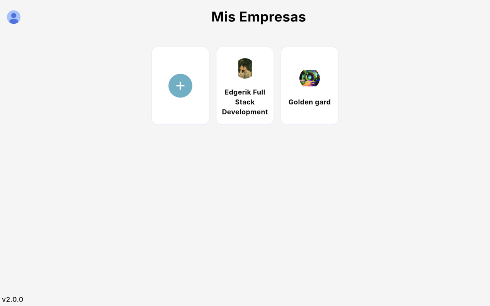
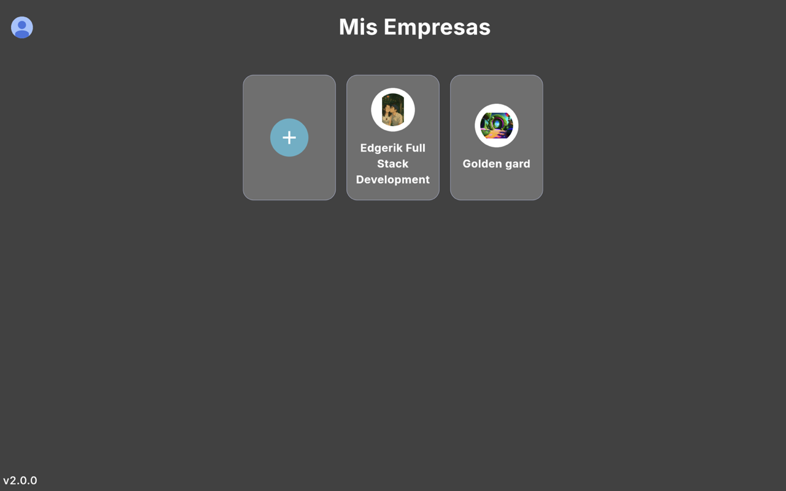
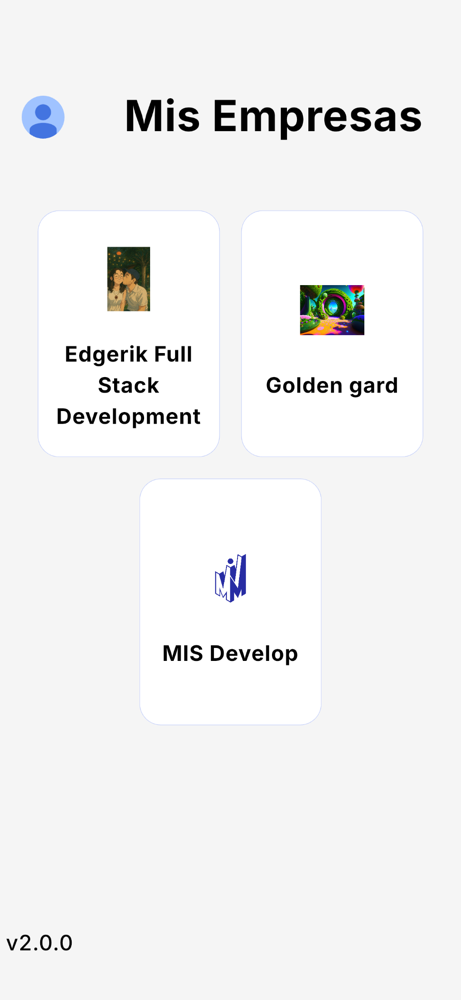
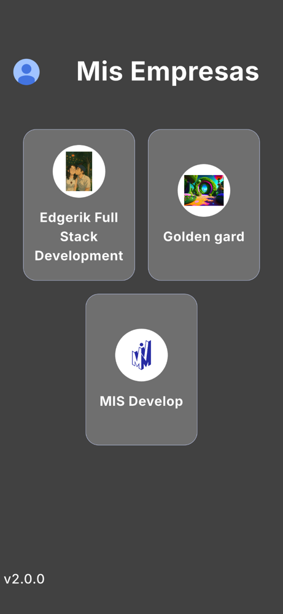

Mis Empresas
Administra varias empresas con un solo usuario y cambia entre ellas sin volver a iniciar sesión.
1. La pantalla Mis Empresas
Después de iniciar sesión ves una tarjeta por cada empresa a la que tienes acceso (logo y nombre) y una tarjeta + para registrar otra. Toca una tarjeta para entrar a su Inicio.




2. Cómo llega una empresa a tu lista
- Tú la registras con el botón + (ver Registrar tu empresa).
- Te agregan desde Negocio › Roles usando tu correo. Aparece en tu lista con el rol que te dieron.
3. Cambiar de empresa
Dentro de una empresa, toca el logo (arriba a la derecha) para abrir el panel de empresas y elegir otra. No necesitas volver a iniciar sesión.
4. El menú de cada empresa
El menú lateral (o el botón de menú en celular) tiene: Perfil, Inicio, Facturas, Compras, Clientes, Productos, Sucursales, Reportes y Negocio. Cada usuario ve solo lo que su rol permite (ver Roles y acceso).
Datos separados por empresa
La información de cada empresa (clientes, productos, facturas, reportes) es independiente. Los usuarios de una empresa no ven los datos de otra.
Última revisión: 4 de octubre de 2026. ¿Algo no coincide con lo que ves en la app? Revisa Ayuda.